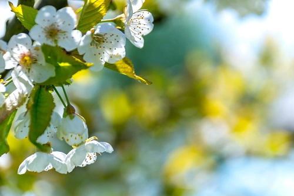

Stories for kids
Nature
On one splendid evening, when the weather was very pleasant, a boy was playing in the garden. He was running left and right after some beautiful butterflies. He looked around and saw colorful flowers of all shapes and sizes. He then saw a shiny green frog hopping around, he ran after it and reached near a small pond. He saw small golden fishes in the pond. Near the pond, he saw a big black and white cow calmy chewing green grass. The boy noticed a little bug teasing the cow. The cow then swirled its tail back and forth to keep the bug away. Looking at it the boy laughed loudly and said "Wow! Nature is so amazing. It has the power to attract anyone to itself." Suddenly he saw a notorious little squirrel running here and there, he chased after it and reached near a flower bed. The flower bed had beautiful red roses that smelled wonderful
Flower
Once upon a time, in the garden of paradise, there bloomed a beautiful flower. There were numerous pretty roses, lilies, tulips, marigolds, daisies, orchids, and many other flowers in the garden. However, when this young flower bloomed its petals, the whole garden found her to be the most beautiful of them all.
Sunset
Sitting on the golden sand watching the beautiful red, orange sun set into the crystal clear blue sky. Just to the left of me I can see a few fluffy pink clouds that look just like freshly made fairy floss. As I lie back onto the sand a small mosquito lands on my nose, I quickly flick it off before it bites me. I can hear the sound of the birds tweeting and the water gently lapping against my feet. As I rise to my feet and slowly walk to the edge of the salty, foamy sea, it sends a shiver up my spine which makes me look straight into the sky then at the sun which meets the horizon it is slowly sinking further and further out of sight. I walk back to my spot and sit down again. The golden sand has stuck to my feet. I lay down and watch the moon arise and the stars pop out into the sky making it the most beautiful sight that I have ever seen.